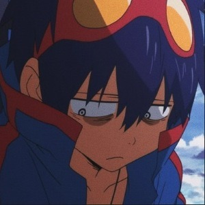
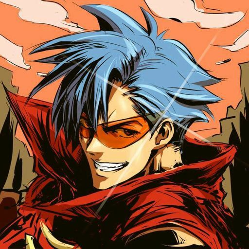
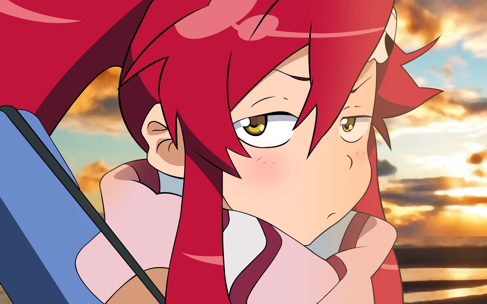

Personagens

Simon
SImon é o protagonista central do anime e mangá. Ele começa a história como um jovem rapaz pequeno, despretensioso e solitário, mas cresce em um homem imponente e bem-amado. Para muitos mais, ele é um herói lendário que superou as probabilidades impossíveis e fica eternamente como baliza para o bem de toda a humanidade.

Kamina
Ele é um idealista e que evita que as coisas aconteçam, muitas vezes ao ponto de ignorância; Yoko descreveu-o como". um homem de estupidez ilimitada "Kamina também é muito pervertido, declarando que o desejo de olhar para mulheres bonitas é a definição de um homem.

Yoko
Ela é uma menina da aldeia vizinha de Jeeha de Littner que tinha sido perseguindo os Gunmen que colidiram com Jeeha durante os acontecimentos de Episódio 1.